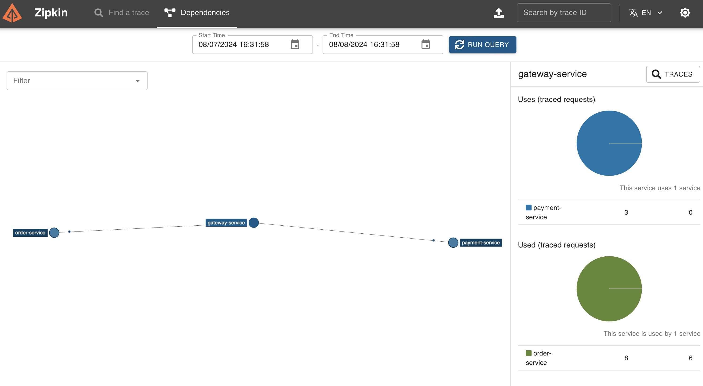

Spring Cloud 速成 Ch10 GateWay 网关
Spring Cloud Gateway 是 Spring Cloud 的一个全新项目，它旨在为微服务架构提供一种简单有效的统一的 API 路由管理方式。
不过在学习 Gateway 前，我们先来复习一下计算机网络。
网关
计算机网络有 OSI 七层模型（理论模型）和 TCP/IP 四层模型（实际模型）。
OSI 模型包括（自下而上）：
- 物理层，即计算机网络依赖的物理设备，如网线、交换机等。
- 数据链路层，即计算机网络物理设备之间连接及其数据传输的协议，重要的概念有以太网协议，MAC 地址，交换机等。这一层相比于网络层，需要考虑物理上的限制，基于 MAC 地址进行数据传输。
- 网络层，即在数据链路层支持了数据传输的基础上，如何在多个网络之间传输数据，重要的概念有 IP 地址，路由器等。这一层相比于数据链路层，只考虑逻辑上的网络连接，基于 IP 地址进行数据传输。
- 传输层，即在网络层支持了数据传输的基础上，如何在端到端的连接中传输数据，重要的概念有 TCP 协议，UDP 协议等。这一层相比于网络层，只考虑端到端的连接，基于端口号进行数据传输。
- 会话层，即在传输层支持了数据传输的基础上，如何在应用程序之间建立连接，重要的概念有会话控制，会话同步等，常用的技术有 RPC，Restful 等。
- 表示层，即在会话层支持了数据传输的基础上，如何在应用程序之间传输数据，重要的概念有数据格式转换，数据加密等。
- 应用层，即在表示层支持了数据传输的基础上，如何在应用程序之间传输数据，重要的概念有 HTTP 协议，FTP 协议，DNS 协议等。
TCP/IP 模型包括（自下而上）：
- 网络接口层，对应 OSI 模型的物理层和数据链路层。
- 网际层，对应 OSI 模型的网络层。
- 传输层，对应 OSI 模型的传输层。
- 应用层，对应 OSI 模型的会话层、表示层和应用层。
在计算机网络中，网关是一个网络节点，用于连接两个网络，实现数据的转发。网关是 OSI 模型中的第三层设备，它可以实现不同网络之间的数据传输，是网络层的一个设备。
例如，我们的家庭网络连接了互联网，那么家庭网络的路由器可以作为一个网关，将家庭网络和互联网连接起来。对于公司部署好的软件，我们可以将网关部署在公司的服务器上，实现公司内部网络和互联网之间的数据传输。
Spring Gateway 三大核心概念
Spring Gateway 有三大核心概念：
- 断言（Predicate）：用于匹配 HTTP 请求的属性，如请求路径、请求参数等。注意，这个断言和 assert 完全不是一个意思，是翻译的问题。Predicate 正确的翻译应该是谓词或者判定器、判据，也就是一些用来判断某物是否符合某条件的函数。
- 过滤器（Filter）：用于修改 HTTP 请求和响应的属性，如请求头、请求体等。可以加在断言之前或之后。
- 路由（Route）：用于将断言和过滤器组合在一起，实现请求的转发。
在接受到请求后，首先检查路由，把请求发送到对应的路由上。然后，检查断言，如果断言匹配，则执行过滤器，修改请求和响应。最后，将请求发送到目标服务。
如果用类似代码的方式来描述，可以用下面的伪代码：
void gatewayHandleRequest(Request request) {
for (Route route : routes) {
boolean match = true;
for (Predicate predicate : route.getPredicates()) {
match &= predicate.test(request);
}
if (!match) continue;
for (Filter filter : route.getFilters()) {
filter.filter(request);
}
route.forward(request);
return;
}
}
创建 Gateway
Gateway 本身也是一个微服务，要注册到注册中心中。
因此我们创建一个 Spring 子项目，要包括之前 Consul 的依赖，以及 Gateway 的依赖。
dependencies {
implementation 'org.springframework.boot:spring-boot-starter-actuator'
implementation 'org.springframework.cloud:spring-cloud-starter-consul-discovery'
implementation 'org.springframework.cloud:spring-cloud-starter-bootstrap'
implementation 'org.springframework.cloud:spring-cloud-starter-consul-config'
implementation 'org.springframework.cloud:spring-cloud-starter-gateway:4.1.5'
}
因为使用的 spring boot 版本，因此直接启动项目即可在 Consul 注册网关。
我们把网关改到 9527 端口。
基于配置文件进行路由映射
对于简单的路由映射，我们可以使用配置文件来实现。
spring:
cloud:
gateway:
routes:
- id: payment-service
uri: lb://payment-service
predicates:
- Path=/**
这里的 uri 可以直接写 http 地址。但是如果写 lb://，则表示 load balanced，这样就可以使用服务名来访问服务。
id 是任意的，但是要唯一。这里的 predicates 是路由转发的条件，这里表示所有的请求都转发到 payment-service 服务。
这样之后，就可以直接通过网关访问 payment 服务了，例如localhost:9527/payment。
如果需要让其它的服务也过网关，修改它们调用的 URI 即可，即下面这样
// @HttpExchange("http://payment-service/payment")
@HttpExchange("http://gateway-service/payment")
我们可以在 ZipKin 中看到，现在 order 请求先经过了网关，网关再转发到 payment 服务。

基于 Bean 进行路由映射
除了配置文件，我们还可以使用 Bean 来配置路由。
@Configuration
public class GatewayConfig {
@Bean
public RouteLocator customRouteLocator(RouteLocatorBuilder builder) {
return builder.routes()
.route("payment-service", r -> r.path("/payment/**")
.uri("lb://payment-service"))
.build();
}
}
Predicate
Predicate 是用来匹配请求的条件，可以根据请求的路径、请求的参数等来匹配。之前我们只用了 Path 断言，还有很多其它的断言，具体可参考官方文档，其它 Predicate 的写法都要参考文档。
内建的 Predicate 有：
- After，请求时间在某个时间之后
- Before，请求时间在某个时间之前
- Between，请求时间在两个时间之间
- Cookie，请求中包含某个 Cookie
- Header，请求头中包含某个值
- Host，请求的 Host 匹配
- Method，请求的方法匹配
- Path，请求的路径匹配
- Query，请求的参数匹配
- RemoteAddr，请求的 IP 地址匹配
Predicate 配置方式有两种，一种叫 Shortcut，即简化的配置方式，另一种叫 Full Expanded，即完全展开的配置方式。
这种配置方式是 Shortcut，即简化的配置方式。
spring:
cloud:
gateway:
routes:
- id: payment-service
uri: lb://payment-service
predicates:
- Path=/**
- Query=**
这种配置方式是 Full Expanded，即完全展开的配置方式。
spring:
cloud:
gateway:
routes:
- id: payment-service
uri: lb://payment-service
predicates:
- name: Path
args:
pattern: /**
当然，也可以使用 Bean 来配置，但是这里不再赘述。
自定义 Predicate
所有的 Predicate 都需要一个 RoutePredicateFactory 工厂来产生。需要自定义 Predicate 时，需要继承 AbstractRoutePredicateFactory 类。
注意，类名应当以 RoutePredicateFactory 结尾，因为 Gateway 会自动扫描这些类。
@Validated 注解是 Spring 的注解，用于校验配置是否正确。ServerWebExchange 类似于 HttpServletRequest，用于获取请求的信息。
@Component
public class CustomPredicateFactory extends AbstractRoutePredicateFactory<CustomPredicateFactory.Config> {
@Validated
public class CustomConfig {
// configurations needed for this predicate
@Data
String secret;
}
public CustomPredicateFactory() {
super(Config.class);
}
@Override
public List<String> shortcutFieldOrder() {
// return the order of the arguments
return Arrays.asList("secret");
}
@Override
public Predicate<ServerWebExchange> apply(Config config) {
// return a Predicate
return new Predicate<ServerWebExchange>() {
@Override
public boolean test(ServerWebExchange exchange) {
// test the exchange
String secret = exchange.getRequest().getQueryParams().getFirst("secret");
return secret != null && secret.equals(config.secret);
}
};
}
}
添加之后，在 yml 文件中使用时，Full Expanded 的方式如下：
spring:
cloud:
gateway:
routes:
- id: payment-service
uri: lb://payment-service
predicates:
- name: Custom
args:
secret: 123
而 Shortcut 的方式如下，其中参数用逗号分隔，顺序与上面的 ShortcutFieldOrder 返回值一致。
spring:
cloud:
gateway:
routes:
- id: payment-service
uri: lb://payment-service
predicates:
- Custom=123
Predicate 的名字 Custom，这是类名的去掉 PredicateFactory 后的部分。
Filter
Spring Gateway 中 Filter 有两种，一种是 Global Filter，一种是 Gateway Filter。前者作用于所有的路由，后者作用于单个路由。但是，前者我们一般不需要去动它们的默认配置。
Gateway Filter 用于修改请求和响应，例如添加请求头、修改请求体等。全部写法具体有很多，具体可参考官方文档。
内建的 Filter 有：
- 请求头相关
- AddRequestHeader，添加请求头
- AddRequestHeaderIfNotPresent，如果请求头不存在，则添加请求头
- SetRequestHeader，设置请求头
- SetRequestHostHeader，设置请求的 Host 头
- RemoveRequestHeader，移除请求头
- MapRequestHeader，映射请求头
- RequestHeaderSize，限制请求头的大小
- 响应头相关
- AddResponseHeader，添加响应头
- SetResponseHeader，设置响应头
- FallbackHeaders，服务降级时设置响应头
- RemoveResponseHeader，移除响应头
- DedupeResponseHeader，删除响应头中的重复条目
- RewriteLocationResponseHeader，重写 Location 响应头中的 URL
- RewriteResponseHeader，重写响应头中的特定值
- SecureHeaders，添加常见的安全相关 HTTP 头
- RewriteLocationResponseHeader，重写 Location 响应头中的 URL
- 路径和参数相关
- RewritePath，使用正则表达式匹配和重写请求路径
- SetPath，设置请求路径
- StripPrefix，去除请求路径中的指定前缀
- PrefixPath，在请求路径前添加指定的前缀
- AddRequestParameter，添加请求参数
- RemoveRequestParameter，移除请求参数
- RewriteRequestParameter，重写请求参数的值
- 请求体和响应体相关
- ModifyRequestBody，修改请求体的内容
- CacheRequestBody，缓存请求体
- ModifyResponseBody，修改响应体的内容
- RemoveJsonAttributesResponseBody，从 JSON 响应体中移除指定的属性
- JsonToGrpc，将 JSON 格式的请求体转换为 gRPC 格式
- 流量管理和容错相关
- CircuitBreaker，实现断路器功能
- Retry，在请求失败时按照指定的策略重试请求
- RequestRateLimiter，对请求进行速率限制
- RequestSize，限制请求的大小
- LocalResponseCache，在本地缓存响应
- 重定向和状态码相关
- RedirectTo，将请求重定向到指定的 URI
- SetStatus，设置响应状态码
- 认证和会话管理相关
- TokenRelay，将 OAuth 2.0 令牌从网关传递到下游服务
- SaveSession，保存会话信息
- PreserveHostHeader，保留原始请求中的 Host 头
要添加 Filter，同样的，我们可以使用配置文件，也可以使用 Bean。
下面是一个添加请求头的 Filter。与之前 Predicate 里加入一个列表不同，Filter 需要传入一个 Map，key 和 value 交替。
spring:
cloud:
gateway:
routes:
- id: payment-service
uri: lb://payment-service
predicates:
- Path=/**
filters:
- AddRequestHeader=X-Request-Foo, Bar
当然，可以用全展开的方式。
spring:
cloud:
gateway:
routes:
- id: payment-service
uri: lb://payment-service
predicates:
- name: Path
args:
pattern: /**
filters:
- name: AddRequestHeader
args:
headerName: X-Request-Foo
headerValue: Bar
同样，也可以使用 Bean 来配置，但是这里不再赘述。
自定义全局 Filter
自定义 GlobalFilter 需要实现GlobalFilter和Ordered接口，前者是 Filter 的接口，后者定义了一个getOrder方法，用于定义 Filter 的顺序，这个getOrder方法返回一个整数，值越小，Filter 的优先级越高。
@Component
public class CustomFilter implements GlobalFilter, Ordered {
@Override
public Mono<Void> filter(ServerWebExchange exchange, GatewayFilterChain chain) {
// do something
return chain.filter(exchange);
}
@Override
public int getOrder() {
return 0;
}
}
这里的Mono是 WebFlux 的语法，我们只会在下面用到一点点，不用太担心。如果你学过 JavaScript 的 Promise，那么 Mono 就是类似的东西。
例如，如果我们需要一个统计请求时间的 Filter，可以这样写：
@Component
@Slf4j
public class RequestTimeFilter implements GlobalFilter, Ordered {
@Override
public Mono<Void> filter(ServerWebExchange exchange, GatewayFilterChain chain) {
exchange.getAttributes().put("requestTimeBegin", System.currentTimeMillis());
return chain.filter(exchange).then(
Mono.fromRunnable(() -> {
Long startTime = exchange.getAttribute("requestTimeBegin");
if (startTime != null) {
log.info(exchange.getRequest().getURI().getRawPath() + ": " + (System.currentTimeMillis() - startTime) + "ms");
}
})
);
}
@Override
public int getOrder() {
return 0;
}
}
自定义 Gateway Filter
Gateway Filter 的自定义与 Predicate 类似，需要继承 AbstractGatewayFilterFactory 类。
@Component
public class CustomGatewayFilterFactory extends AbstractGatewayFilterFactory<CustomGatewayFilterFactory.Config> {
@Validated
public class Config {
// configurations needed for this filter
@Data
String secret;
}
@Override
public List<String> shortcutFieldOrder() {
// return the order of the arguments
return Arrays.asList("secret");
}
public CustomGatewayFilterFactory() {
super(Config.class);
}
@Override
public GatewayFilter apply(Config config) {
return new GatewayFilter() {
@Override
public Mono<Void> filter(ServerWebExchange exchange, GatewayFilterChain chain) {
String secret = exchange.getRequest().getQueryParams().getFirst("secret");
if (secret == null || !secret.equals(config.secret)) {
exchange.getResponse().setStatusCode(HttpStatus.UNAUTHORIZED);
return exchange.getResponse().setComplete();
}
return chain.filter(exchange);
}
};
}
}
这里实现了一个简单的密码验证 Filter。添加之后，在 yml 文件中使用时，Full Expanded 的方式如下：
spring:
cloud:
gateway:
routes:
- id: payment-service
uri: lb://payment-service
predicates:
- name: Path
args:
pattern: /**
filters:
- name: Custom
args:
secret: 123
而 Shortcut 的方式如下，其中参数用逗号分隔，顺序与上面的 ShortcutFieldOrder 返回值一致。
spring:
cloud:
gateway:
routes:
- id: payment-service
uri: lb://payment-service
predicates:
- Path=/**
filters:
- Custom=123
一样的，Custom 是类名的去掉 GatewayFilterFactory 后的部分。